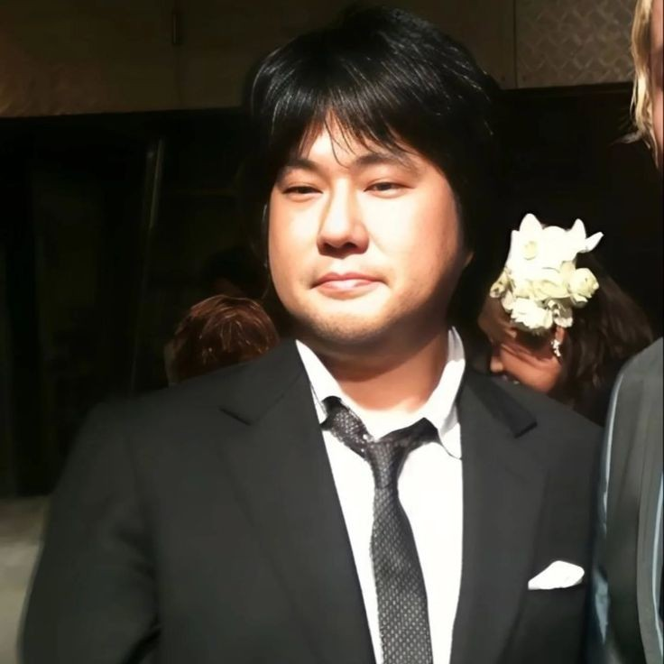

CRIADOR DO MANGÁ
Eiichiro Oda
Eiichiro Oda é o autor e ilustrador de One Piece. Sua obra começou a ser publicada em 1997 e acompanha a jornada de Monkey D. Luffy e sua tripulação.
Como mangaká, Oda é responsável pela criação original, história e arte do mangá de One Piece.